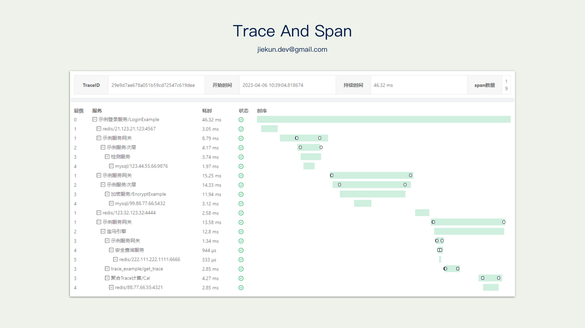
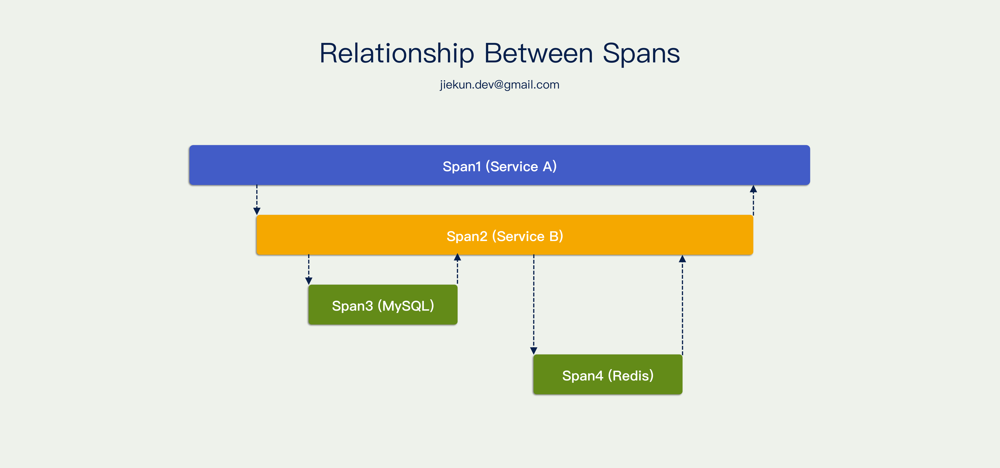
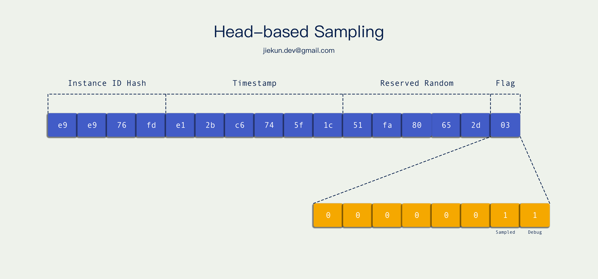
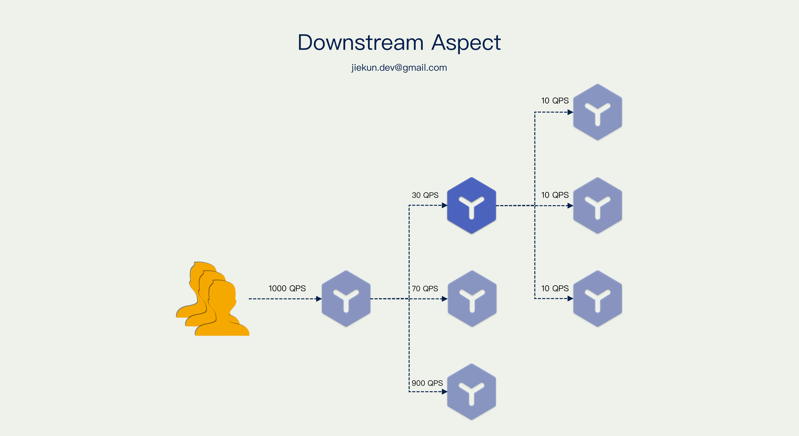
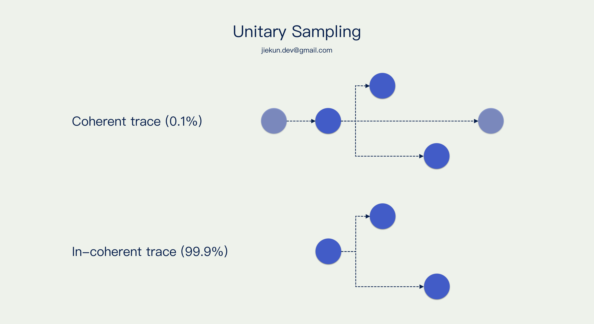
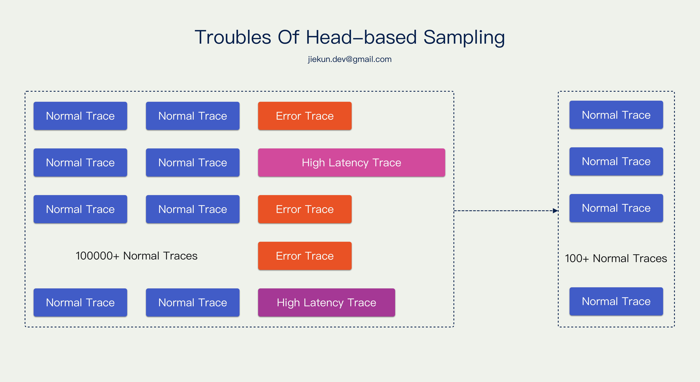
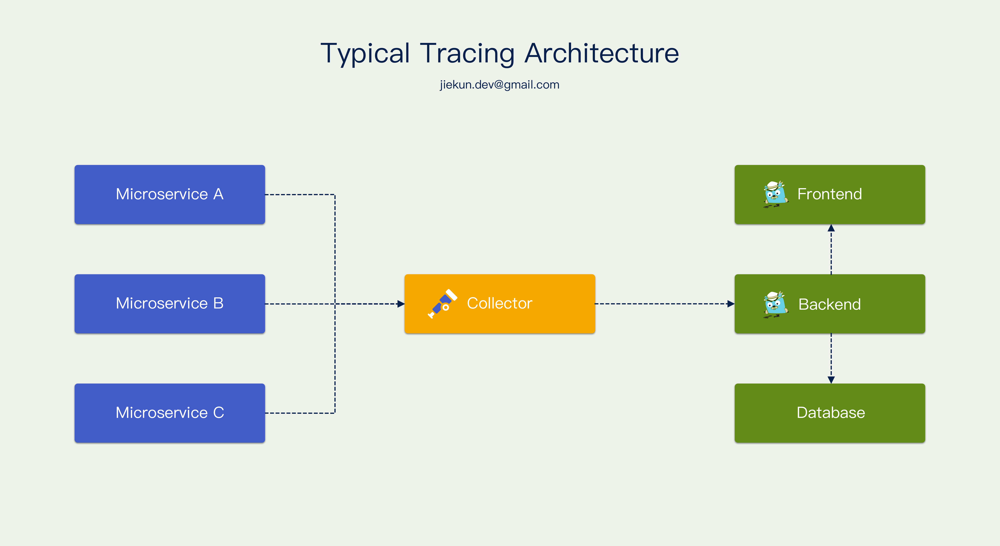
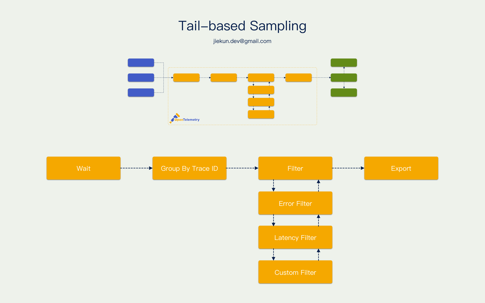

可观测性专题: 分布式追踪中的采样
1. Warm-up
我们常说 Metrics，Logging，Tracing 是可观测性的三大支柱，而其中 Distributed Tracing 就是当前微服务架构下用来排查服务问题的手段之一。
下图是由 Zipkin 呈现的可视化调用链路，对于一条完整的调用链路，我们通常用 Trace 来表示，一个 Trace 描述一次请求在（多个）服务中经过的路径。继续细分，每个路径均可称为 Span，Span 代表一个过程，它可以是一次 RPC 调用、中间件调用，也可以是一个 for 循环逻辑。

Span 之间有简单的规则，他们可以相互平行，也可以相互包含。例如右侧这个调用图，Service A 调用 Service B，Service B 调用 MySQL 和 Redis，所以 Span 1 包含其他的 Span，Span 2 包含两次中间件操作，Span 3 和 Span 4 相互平行。

多个 Span 构成一个 Trace，所以需要有东西描述 Span，描述 Trace，描述 Span 和 Trace 之间的关系，它叫 Span Context。定义这样一个 interface，它可以获取当前 Span，可以知道这个 Span 的上级 Span，也可以知道这些 Span 属于哪一个 Trace。
type SpanContext interface {
...
TraceID() string
SpanID() string
ParentSpanID string
...
}
Span Context 的具体实现形式不限，例如通过定义结构体来实现：
// Defination 定义
type SpanContext struct {
TraceID TraceID `json:"trace_id"`
SpanID ID `json:"span_id"`
ParentID *ID `json:"parent_id,omitempty"`
...
}
// Real-world example 示例
{
"trace_id": "d8128872e435850e1c080232c316db96",
"span_id": "6cd9b539e437e354",
"parent_id": "2d01366826248d1a",
...
}
也可以用一个 Request ID 来实现 Span Context，这个 Request ID 可以分为 3 段，第一段是 Trace ID，第二段是 Span ID，第三段是 Parent Span ID。
// Defination 定义
type spanContext struct {
RequestID string `json:"reqiest_id"` // {TraceID}:{SpanID}:{ParentID}
}
// Real-world example 示例
"e9e976fde12bc6745f1c51fa80652d01:000000788c34c719:0000000000000000"
"e9e976fde12bc6745f1c51fa80652d01:010000a1d0a89300:000000788c34c719"
例如上面这个 Request ID 分属于两个不同的 Span，因此他们有不同的 Span ID，但是他们的 Trace ID 是相同的，说明他们属于同一个 Trace；其中，第二个 Request ID 里面的 Parent Span ID 等于第一个 Request ID 里的 Span ID，说明他们存在调用关系。
随着服务数量的日益增加，承接全量的 Tracing 数据所需的资源越来越多。我们先简单算一下，如果某个链路的调用量 4000 QPS，每个调用产生大概 30 个 Span，每个 Span 大约 500 Byte，那一天产生的数据就是：
4000 * 30 * 500 Bytes * 24 Hours = 4.7 TiB
如果有 100 个调用链路入口，那每天就能产生 400 TiB 的数据。要完整接下这些数据比较困难，因此需要借助采样来减少数据量。
本文 2、3 节介绍是当前 Distributed Tracing 中常用的采样策略，第 4 节和第 5 节介绍两篇论文，代表 Distributed Tracing 采样的研究方向，亦作为现有策略的发散和补充。
2. Head Sampling And Unitary Sampling
通常来说，Trace ID 里面可以携带一些信息，例如下图的实现方式：Trace ID 转成二进制后，用了最后 8 位作为标记位，其中最后两位分别是 Sample Flag 和 Debug Flag。

因为同一个 Trace 中，各个 Span Context 都持有相同的 Trace ID，因此他们都会遵循 Trace ID 中的采样标记。Trace ID 是在调用链路入口的地方就生成好的，也就是调用链路开头，所以这种采样决策称为 头部采样。
这种采样方式的特点是非常轻量，也保持了 Trace 的连贯性（我们后面会提及一些不连贯的采样方式），它是在应用上报的时候采样的，没命中采样标记位的数据不会上报，不产生网络、磁盘 I/O，最终只有少量数据送往应用之外。
我们现在换一个视角考虑采样问题，如果我们是一个中间服务，例如下图中的蓝色服务，它的上游有 1000 QPS 的调用量和固定 0.1% 的头部采样率，但是它自身仅收到其中的 3% 调用，最终每秒仅能上报 0.03 次。

我们知道通过 Trace 除了观察外部的调用链路以外，也可用于观察自己服务内打点上报的内容，例如自身对 MySQL、Redis 的调用。在这个场景里面，中间服务由于极低的上报率，难以借助 Trace 观测到自身的问题。难道它就没有任何办法去影响采样决策？当然是有解法的，对于愿意忽略上下文，把 Trace 当做服务内可观测性强化工具使用的场景，可以使用单元采样的策略。
假设入口处采样率为 0.1%，正常情况下，下游所有服务都要遵循它的决策。而单元采样允许链路中某个小单元忽略采样标记位，无视上下文强行上报，它可以保证单元内的调用链路是完整采集的，但是缺失外部上下游的信息。例如图里的服务无视上下游100%上报，最后能看到的结果就是 0.1% 的 Trace 是完整的、连贯的，另外99.9% 的 Trace 只有它自己应用内的一些调用链路。
具体举例子，下图深色的 Span 是开启了单元采样的服务产生的，浅色的 Span 是其他服务产生的。0.1% 的 Trace（就全链路而言）是完整的，而 99.9% 的 Trace 仅部分完整。

3. Tail-based Sampling
在讨论尾部采样之前，我们要知道头部采样有什么样的缺点。由于 Trace 诞生瞬间，它的命运就已经决定了，所以它不能知道未来是否会发生错误、是否会阻塞很久，这些信息无法作为采样决策的依据，那就会导致我们使用了大量空间存放正常 Trace，丢失很多异常 Trace。
例如下图，一段时间内，共有 10w 个正常 Trace 以及少量错误或者长耗时 Trace，0.1% 采样的结果极有可能是留存 100 个 正常 Trace。

我们理想的效果更应该是：有问题的 Trace 全部保留，并且搭配一些正常 Trace 作为样本，怎样才能达到这个效果呢？
通常 Tracing 基础设施的架构都可以用下图来概括，不同服务把数据上报到 Collector，Collector 兼容不同服务上报的数据格式，对 Trace 平台后端输出统一格式的数据，后端把数据落库，并且提供接口让前端查询和展示。那这里存在一个中间的 Collector，看起来非常适合做数据的收集和分析。我们很容易考虑让 Collector 临时承载所有数据，等到 Trace 结束再依据其中信息做采样决策。

这种采样方式叫尾部采样，因为它是在调用结束的时候才决策的。通常 Collector 在一个 Trace 第一个 Span 抵达的时候会将它暂存一段时间，等待这个 Trace 的其他 Span 也上报上来。等待窗口期结束后，按照 Trace ID 组织好各个 Span 的数据，然后使用不同的 Filter 对这些 Span 进行遍历，例如检查里面有没有携带错误信息的 Span，或者 Span 里面有没有一些自定义的 Tag 等等。依据这些信息决定丢弃还是保留这个 Trace，最后按照 Trace 后端约定的格式输出。

尾部采样的好处是可以尽可能观察到整个 Trace，取决于暂存的时间窗口有多宽，因为特殊情况有的 Trace 可以长达数分钟，还是存在在不完整的情况下做决策的可能的。因为需要大量内存来暂存数据，所以尾部采样对基础设施的要求很高，它减少了最终送达 Trace 后端落库的数据量，并且不像头部采样一样都是些没用的数据。理想情况下它可以自由控制后端数据的比例，例如正常 Trace 占 30%，异常 Trace 占70%。